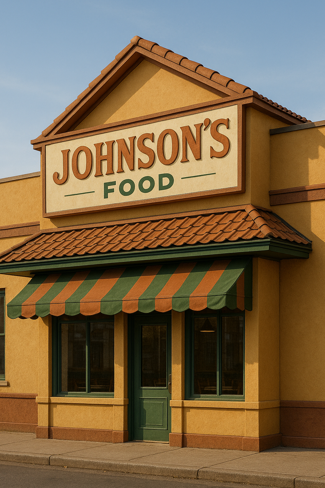

Sobre Johnson's Food
No coração de uma cidadezinha tranquila chamada Belford Roxo, nasceu a lanchonete Johnson’s Food, fundada por um simpático e excêntrico senhor chamado Alla Johnson. Ex-cozinheiro da marinha e apaixonado por comida simples e feita com carinho, Alla largou tudo para abrir um pequeno restaurante com uma proposta ousada: celebrar o sabor da simplicidade.

O Começo
Tudo começou em uma tarde quente de verão, quando Alla, sentado na varanda de sua casa, fritava um ovo na frigideira de ferro herdada da avó. Ao ver os vizinhos parando na calçada com olhares famintos, ele teve uma ideia: — "Se um ovo frito pode parar a rua, imagina um cardápio inteiro com o básico bem feito?" E assim nasceu o Johnson's Food.